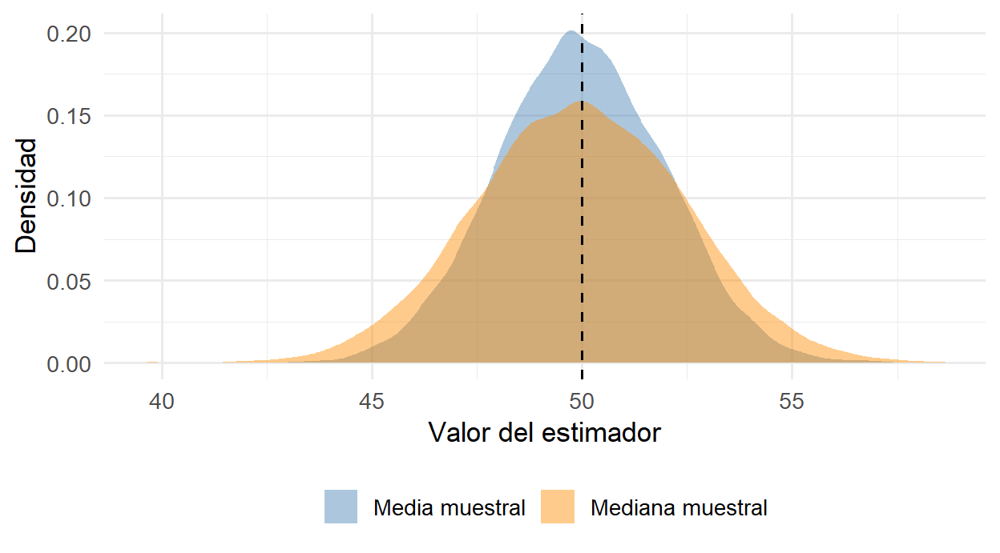
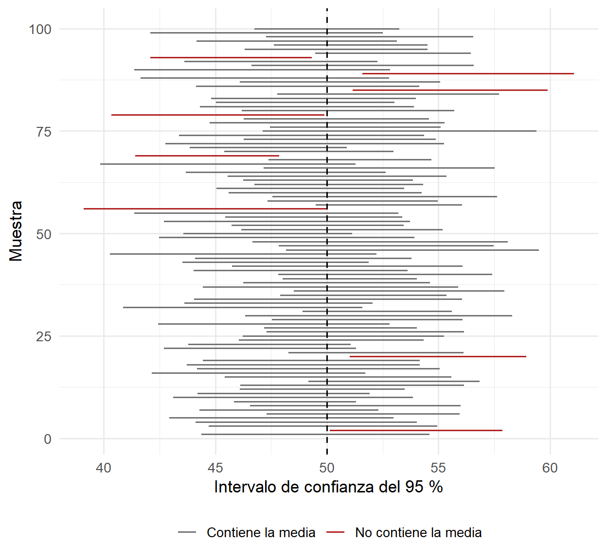
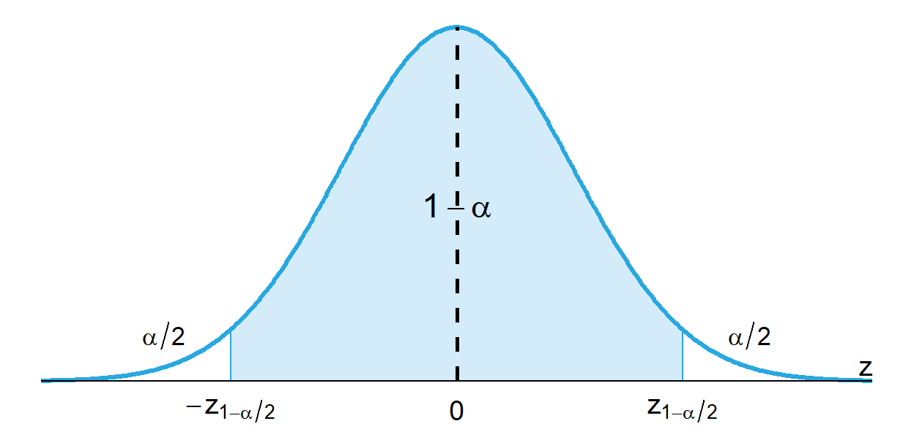
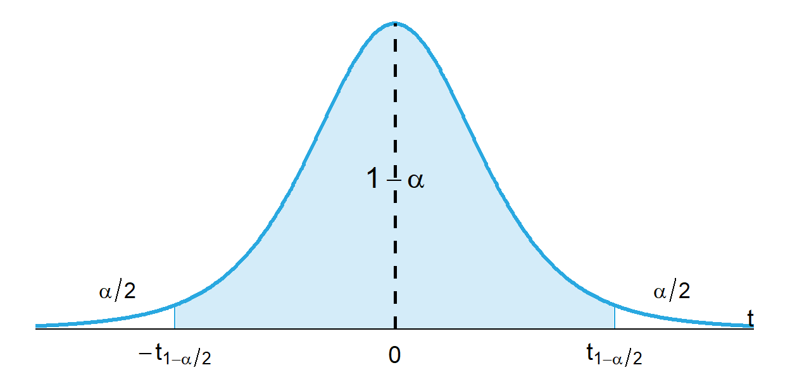
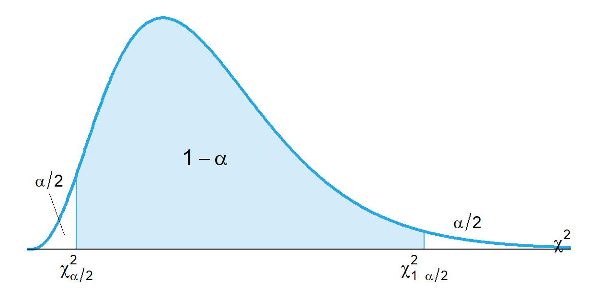
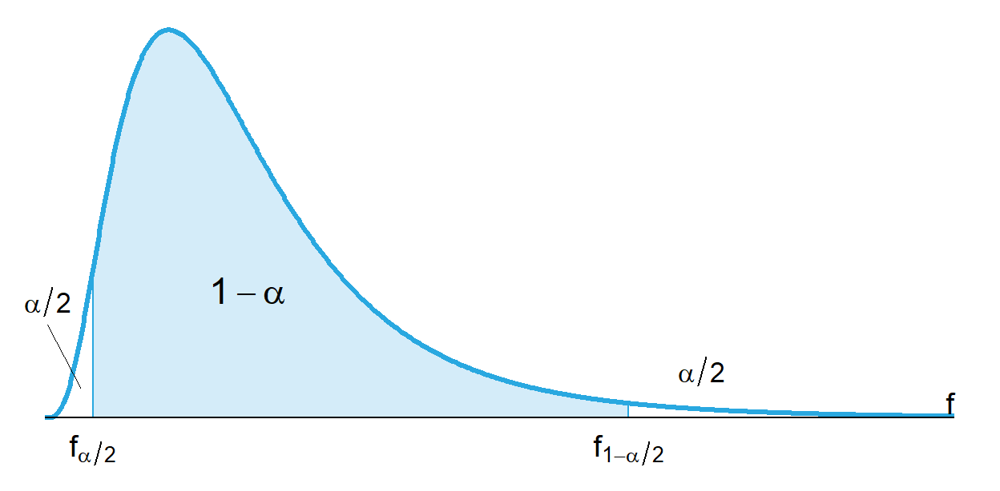

Capítulo 1: Estimación
Objetivos del capítulo
Al terminar este capítulo, usted estará en capacidad de:
- distinguir entre estimación puntual y estimación por intervalo;
- reconocer las propiedades deseables de un estimador: insesgamiento, consistencia, eficiencia y suficiencia;
- interpretar correctamente un intervalo de confianza;
- construir intervalos de confianza para una media, una proporción y una varianza, y para la diferencia de dos medias, la diferencia de dos proporciones y el cociente de dos varianzas;
- determinar el tamaño de muestra necesario para estimar una media o una proporción con un margen de error dado;
- calcular intervalos de confianza con R.
1 Inferencia estadística
En el capítulo 1 de Estadística I definimos los parámetros, medidas que describen a la población y que casi nunca se conocen, y los estadísticos, medidas que se calculan con la muestra. En el capítulo 4 de Estadística I estudiamos cómo varían los estadísticos de una muestra a otra. Ahora damos el paso decisivo: usar los estadísticos para sacar conclusiones sobre los parámetros.
Definición 1 (Inferencia estadística) La inferencia estadística comprende los métodos que permiten obtener conclusiones o generalizaciones sobre una población a partir de la información de una muestra, cuantificando la incertidumbre de esas conclusiones.
La inferencia se divide en dos grandes áreas, que se distinguen por el tipo de pregunta que responden (Walpole et al., 2012, p. 266):
- Estimación. Una empresa de transporte quiere conocer el consumo promedio de combustible de su flota. Mide el consumo de una muestra de vehículos y usa el promedio de la muestra para estimar el promedio de toda la flota. Conocer la distribución muestral de la media le permite, además, saber qué tan precisa es esa estimación. Aquí no hay una afirmación previa que poner a prueba: se quiere conocer el valor de un parámetro.
- Pruebas de hipótesis. Un fabricante afirma que sus llantas de la marca A frenan en menos distancia que las de la marca B. Un laboratorio realiza pruebas con ambas marcas para decidir si la evidencia apoya o no esa afirmación. Aquí no se busca estimar un parámetro, sino tomar una decisión sobre una hipótesis planteada de antemano.
Este capítulo se ocupa de la estimación, y el capítulo 2 de las pruebas de hipótesis. Como veremos, las dos áreas están estrechamente relacionadas.
2 Estimación puntual
La estimación de un parámetro se puede hacer de dos formas: dando un solo número, que es la estimación puntual, o dando un rango de valores, que es la estimación por intervalo.
Definición 2 (Estimador y estimación) Un estimador puntual de un parámetro \(\theta\) es un estadístico \(\hat{\Theta} = h(X_1, \ldots, X_n)\), es decir, una función de la muestra, que se usa para aproximar el valor de \(\theta\). El valor que toma el estimador con una muestra concreta, \(\hat{\theta} = h(x_1, \ldots, x_n)\), se llama estimación puntual.
La notación que usaremos
Seguimos la misma convención de Estadística I: las variables aleatorias se escriben con mayúscula y sus valores observados con minúscula.
| Símbolo | Se lee | Qué es | ¿Es aleatorio? |
|---|---|---|---|
| \(\theta\) | “theta” | El parámetro: un número fijo, pero desconocido | No |
| \(\hat{\Theta}\) | “theta mayúscula gorro” | El estimador: la regla, una variable aleatoria | Sí |
| \(\hat{\theta}\) | “theta gorro” | La estimación: el número que da el estimador con una muestra | No |
Así, para la media, \(\theta = \mu\), \(\hat{\Theta} = \bar{X}\) y \(\hat{\theta} = \bar{x}\): la misma distinción que hicimos en el capítulo 4 de Estadística I entre \(\bar{X}\) y \(\bar{x}\). El estimador es la regla y la estimación es el número que esa regla produce con unos datos particulares. La única excepción, por costumbre, es la proporción: se escribe \(\hat{p}\) tanto para el estimador como para la estimación, y el contexto indica de cuál se trata.
La Tabla 1 muestra los estimadores puntuales de los parámetros más usados.
| Parámetro | Estimador | Estimación con los datos |
|---|---|---|
| Media \(\mu\) | \(\bar{X}\) | \(\bar{x}\) |
| Varianza \(\sigma^2\) | \(S^2\) | \(s^2\) |
| Proporción \(p\) | \(\hat{p} = X/n\) | proporción observada |
| Diferencia de medias \(\mu_X - \mu_Y\) | \(\bar{X} - \bar{Y}\) | \(\bar{x} - \bar{y}\) |
| Diferencia de proporciones \(p_X - p_Y\) | \(\hat{p}_X - \hat{p}_Y\) | diferencia observada |
| Cociente de varianzas \(\sigma_X^2/\sigma_Y^2\) | \(S_X^2/S_Y^2\) | \(s_X^2/s_Y^2\) |
3 Propiedades de los estimadores
Para un mismo parámetro se pueden proponer muchos estimadores. La media de una población simétrica, por ejemplo, se podría estimar con la media muestral, con la mediana muestral o con el promedio entre el mínimo y el máximo. ¿Cuál elegir? ¿Qué hace que un estimador sea bueno? Como un estimador es una variable aleatoria, la respuesta está en su distribución muestral: un buen estimador es uno cuya distribución está centrada en el parámetro y concentrada alrededor de él (Devore, 2008, pp. 231, 235).
3.1 Insesgamiento
Definición 3 (Estimador insesgado) Un estimador \(\hat{\Theta}\) es insesgado para el parámetro \(\theta\) si \[ E(\hat{\Theta}) = \theta . \] Si no lo es, la diferencia \(E(\hat{\Theta}) - \theta\) se llama sesgo.
Un estimador insesgado no acierta en cada muestra, pero en promedio, sobre todas las muestras posibles, no tiende a sobreestimar ni a subestimar el parámetro.
Ejemplo 1
- La media muestral es un estimador insesgado de \(\mu\), porque, como vimos en el capítulo 4 de Estadística I, \(E(\bar{X}) = \mu\).
- La proporción muestral es un estimador insesgado de \(p\), porque \(E(\hat{p}) = p\).
- La varianza muestral \(S^2\) es un estimador insesgado de \(\sigma^2\). Esta es la razón, anunciada en el capítulo 1 de Estadística I, por la cual se divide entre \(n - 1\). La demostración se apoya en la identidad \[ \sum_{i=1}^{n} (X_i - \bar{X})^2 = \sum_{i=1}^{n} (X_i - \mu)^2 - n(\bar{X} - \mu)^2 . \] Tomando valor esperado en ambos lados, y como \(E(X_i - \mu)^2 = \sigma^2\) y \(E(\bar{X} - \mu)^2 = V(\bar{X}) = \sigma^2/n\), \[ E\left[\sum_{i=1}^{n} (X_i - \bar{X})^2\right] = n\sigma^2 - n\,\frac{\sigma^2}{n} = (n - 1)\,\sigma^2 , \] de modo que \(E(S^2) = \dfrac{(n-1)\sigma^2}{n - 1} = \sigma^2\). Si se dividiera entre \(n\), el valor esperado sería \(\frac{n-1}{n}\sigma^2\): ese estimador subestimaría sistemáticamente la varianza.
3.2 Consistencia
Definición 4 (Estimador consistente) Sea \(\hat{\Theta}_n\) un estimador de \(\theta\) calculado con una muestra de tamaño \(n\). Se dice que \(\hat{\Theta}_n\) es consistente si, para todo \(\varepsilon > 0\), \[ \lim_{n \to \infty} P\big(|\hat{\Theta}_n - \theta| \le \varepsilon\big) = 1 . \]
En palabras: a medida que la muestra crece, la probabilidad de que el estimador quede tan cerca como se quiera del parámetro tiende a 1. Una condición suficiente, fácil de verificar, es que el estimador sea insesgado (o que su sesgo tienda a cero) y que su varianza tienda a cero cuando \(n\) crece. Por ejemplo, \(\bar{X}\) es consistente, porque es insesgado y \(V(\bar{X}) = \sigma^2/n \to 0\).
3.3 Eficiencia
Definición 5 (Estimador eficiente) Entre dos estimadores insesgados de un mismo parámetro, es más eficiente el que tiene menor varianza. Si se consideran todos los estimadores insesgados de \(\theta\), el que tiene la menor varianza se llama estimador insesgado de varianza mínima, o el estimador más eficiente.
Si dos estimadores están centrados en el parámetro, conviene el que se dispersa menos, porque sus estimaciones tienden a estar más cerca del valor verdadero.
Ejemplo 2 Si la población es normal, tanto la media como la mediana muestral son estimadores insesgados de \(\mu\), porque la distribución es simétrica. Pero no son igual de eficientes: para muestras grandes, la varianza de la mediana es aproximadamente \(\pi\sigma^2/(2n) \approx 1{,}57\,\sigma^2/n\), mayor que la de la media, \(\sigma^2/n\); es decir, la eficiencia relativa asintótica de la mediana frente a la media es \(2/\pi \approx 0{,}64\), un resultado que se remonta a Fisher (Hodges & Lehmann, 1970). La Figura 1 lo muestra con una simulación de 10 000 muestras de tamaño 25 de una población \(N(50,\ 10^2)\): las dos distribuciones están centradas en 50, pero la de la mediana es más dispersa. Para obtener con la mediana la misma precisión que con la media, se necesitaría una muestra un 57 % más grande.
Sesgo y varianza: el error cuadrático medio
A veces hay que elegir entre un estimador insesgado con mucha varianza y otro con un pequeño sesgo pero mucha menos varianza. Para compararlos se usa el error cuadrático medio, que combina las dos cosas: \[ ECM(\hat{\Theta}) = E\big[(\hat{\Theta} - \theta)^2\big] = V(\hat{\Theta}) + \big[\text{sesgo}(\hat{\Theta})\big]^2 . \] Para un estimador insesgado, el error cuadrático medio es simplemente su varianza (Devore, 2008, p. 230).
3.4 Suficiencia
Definición 6 (Estimador suficiente) Un estimador \(\hat{\Theta}\) es suficiente para \(\theta\) si utiliza toda la información que la muestra contiene acerca de \(\theta\), de modo que, una vez conocido su valor, los datos individuales no aportan información adicional sobre el parámetro.
Por ejemplo, para estimar la probabilidad \(p\) de éxito en \(n\) ensayos de Bernoulli, basta saber el número de éxitos: el orden en que ocurrieron no dice nada adicional sobre \(p\). Por eso la proporción muestral es un estimador suficiente de \(p\). Del mismo modo, para una población normal con varianza conocida, la media muestral es suficiente para \(\mu\). El concepto fue introducido por Fisher, quien lo planteó como el criterio de que el estadístico resuma toda la información relevante que la muestra contiene sobre el parámetro (Fisher, 1922). Su definición formal requiere herramientas que van más allá de este curso.
La Tabla 2 resume las cuatro propiedades.
| Propiedad | Pregunta que responde | Ejemplo |
|---|---|---|
| Insesgamiento | ¿Está centrado en el parámetro? | \(E(S^2) = \sigma^2\) |
| Consistencia | ¿Se acerca al parámetro al crecer \(n\)? | \(V(\bar{X}) = \sigma^2/n \to 0\) |
| Eficiencia | ¿Tiene la menor varianza posible? | La media frente a la mediana en la normal |
| Suficiencia | ¿Usa toda la información de la muestra? | El número de éxitos para estimar \(p\) |
4 Intervalos de confianza
Incluso el mejor estimador puntual casi nunca coincide exactamente con el parámetro: con la media de una muestra sabemos que el valor verdadero está “cerca”, pero no cuánto. Por eso es preferible dar un intervalo de valores, construido de manera que contenga al parámetro con una probabilidad alta y conocida.
Definición 7 (Intervalo de confianza) Sean \(\hat{\Theta}_L\) y \(\hat{\Theta}_U\) dos estadísticos tales que \[ P\big(\hat{\Theta}_L < \theta < \hat{\Theta}_U\big) = 1 - \alpha, \qquad 0 < \alpha < 1 . \] Con una muestra concreta, los valores observados \(\hat{\theta}_L < \theta < \hat{\theta}_U\) forman un intervalo de confianza del \(100(1 - \alpha)\) % para \(\theta\). El número \(1 - \alpha\) se llama nivel de confianza (o coeficiente de confianza), y \(\hat{\theta}_L\) y \(\hat{\theta}_U\) son los límites de confianza inferior y superior.
Los niveles de confianza más usados son 90 %, 95 % y 99 % (Daniel, 1987, p. 178), que corresponden a \(\alpha = 0{,}10\), \(0{,}05\) y \(0{,}01\). Observe que los límites \(\hat{\Theta}_L\) y \(\hat{\Theta}_U\) son variables aleatorias: cambian de una muestra a otra. Lo que es fijo, aunque desconocido, es el parámetro \(\theta\).
4.1 Cómo se interpreta un intervalo de confianza
La interpretación correcta se basa, como la probabilidad frecuentista, en la repetición (Daniel, 1987, p. 178; Devore, 2008, p. 257; Walpole et al., 2012, p. 271):
Un intervalo de confianza del 95 % se construye con un procedimiento tal que, si se repitiera el muestreo muchas veces y en cada muestra se calculara el intervalo, aproximadamente el 95 % de los intervalos obtenidos contendría el verdadero valor del parámetro.
La Figura 2 lo ilustra con 100 muestras simuladas de tamaño 20 de una población normal con media \(\mu = 50\). Con cada muestra se calculó un intervalo de confianza del 95 % para \(\mu\), con el método que veremos en la siguiente sección. Cada intervalo es distinto, porque cada muestra es distinta; en esta simulación, 8 de los 100 intervalos no contienen el valor verdadero, muy cerca del 5 % esperado.

Un error de interpretación muy frecuente
Una vez calculado con una muestra concreta, por ejemplo \((4{,}24;\ 5{,}21)\), el intervalo ya no es aleatorio: contiene o no contiene a \(\mu\), y no sabemos cuál de las dos cosas ocurre. Por eso no es correcto decir “hay una probabilidad del 95 % de que \(\mu\) esté entre 4,24 y 5,21”. Lo correcto es decir “tenemos una confianza del 95 % en que el intervalo contiene a \(\mu\)”, entendiendo que la confianza se refiere al procedimiento: el 95 % de los intervalos construidos así contienen el parámetro. Esta confusión es tan común que la cometen incluso investigadores con experiencia: en un estudio con 120 investigadores y 442 estudiantes de psicología, ambos grupos aceptaron en promedio más de tres de seis interpretaciones incorrectas de un intervalo de confianza (Hoekstra et al., 2014).
Hay un compromiso entre confianza y precisión: para aumentar el nivel de confianza hay que ensanchar el intervalo, y un intervalo muy ancho dice poco (Walpole et al., 2012, p. 269). La única forma de ganar a la vez confianza y precisión es aumentar el tamaño de la muestra, como muestra la fórmula del margen de error de la sección siguiente.
4.2 Cómo se encuentran los límites de confianza
¿Cómo se obtienen, en la práctica, los estadísticos \(\hat{\Theta}_L\) y \(\hat{\Theta}_U\) de la Definición 7? El procedimiento general, conocido como método de la cantidad pivotal, consta de cinco pasos (Devore, 2008, p. 260).
- Identificar el parámetro \(\theta\) que se quiere estimar y su estimador puntual \(\hat{\Theta}\).
- Encontrar una cantidad pivotal: una expresión \(Q\) que dependa del estimador y del parámetro, cuya distribución sea conocida y no dependa de \(\theta\). Las cantidades pivotales que usaremos son precisamente los estadísticos de la tabla resumen del capítulo 4 de Estadística I: \(Z\), \(T\), \(\chi^2\) y \(F\).
- Buscar dos cuantiles \(a\) y \(b\) de la distribución de \(Q\) que dejen entre ellos un área \(1 - \alpha\) y, por fuera, un área \(\alpha/2\) en cada cola: \[ P(a < Q < b) = 1 - \alpha . \]
- Despejar el parámetro \(\theta\) en el centro de la doble desigualdad \(a < Q < b\), con las reglas usuales del álgebra, hasta llegar a una expresión de la forma \[ P\big(\hat{\Theta}_L < \theta < \hat{\Theta}_U\big) = 1 - \alpha . \] Las expresiones que quedan a la izquierda y a la derecha de \(\theta\) son los límites de confianza inferior y superior.
- Reemplazar en \(\hat{\Theta}_L\) y \(\hat{\Theta}_U\) los valores observados en la muestra, lo que da el intervalo numérico \((\hat{\theta}_L,\ \hat{\theta}_U)\).
Al despejar en el paso 4 hay que recordar dos reglas de las desigualdades: al multiplicar o dividir por un número negativo, y al tomar el recíproco de cantidades positivas, el sentido de las desigualdades se invierte. Las dos aparecerán en las secciones siguientes.
5 Intervalo de confianza para la media
Para construir un intervalo de confianza se necesitan dos ingredientes: un estimador puntual del parámetro y su distribución muestral. Para la media \(\mu\), el estimador es \(\bar{X}\), y su distribución la estudiamos en el capítulo 4 de Estadística I. Distinguimos dos casos, según se conozca o no la varianza de la población.
Usaremos la notación de cuantiles del capítulo 4 de Estadística I: \(z_{1-\alpha/2}\) es el valor que deja una probabilidad \(1 - \alpha/2\) a su izquierda en la normal estándar, de modo que entre \(-z_{1-\alpha/2}\) y \(z_{1-\alpha/2}\) queda un área \(1 - \alpha\). Para un intervalo del 95 %, \(\alpha = 0{,}05\) y \(z_{0{,}975} = 1{,}96\) (Figura 3).

5.1 Caso 1: varianza conocida
Supuestos
- \(X_1, X_2, \ldots, X_n\) es una muestra aleatoria de una población con distribución normal.
- La media \(\mu\) de la población es desconocida; es el parámetro que se quiere estimar.
- La varianza \(\sigma^2\) de la población es conocida.
El objetivo es construir un intervalo de confianza del \(100(1-\alpha)\) % para \(\mu\), con \(0 < \alpha < 1\), a partir del mejor estimador de \(\mu\), la media muestral \(\bar{X}\) (Canavos, 1988, p. 274; Walpole et al., 2012, p. 270).
Si la población no es normal pero la muestra es grande, el procedimiento sigue siendo aproximadamente válido gracias al teorema central del límite. Apliquemos los cinco pasos del método de la cantidad pivotal.
Paso 1. Parámetro y estimador. El parámetro es \(\theta = \mu\), y su estimador puntual es \(\hat{\Theta} = \bar{X}\).
Paso 2. Cantidad pivotal. Por el capítulo 4 de Estadística I, \[ Z = \frac{\bar{X} - \mu}{\sigma/\sqrt{n}} \sim N(0, 1), \] exacta o aproximadamente. \(Z\) depende de \(\bar{X}\) y de \(\mu\), y su distribución, la normal estándar, no depende de \(\mu\).
Paso 3. Cuantiles. Como la normal estándar es simétrica, los cuantiles que dejan un área \(\alpha/2\) en cada cola son \(-z_{1-\alpha/2}\) y \(z_{1-\alpha/2}\) (Figura 3), de modo que \[ P\left(-z_{1-\alpha/2} < \frac{\bar{X} - \mu}{\sigma/\sqrt{n}} < z_{1-\alpha/2}\right) = 1 - \alpha . \]
Paso 4. Despejar \(\mu\). Se trabaja sobre la doble desigualdad del paréntesis, aplicando la misma operación a sus tres partes:
- se multiplica por \(\sigma/\sqrt{n}\), que es positivo, y las desigualdades se conservan: \[ -z_{1-\alpha/2}\frac{\sigma}{\sqrt{n}} < \bar{X} - \mu < z_{1-\alpha/2}\frac{\sigma}{\sqrt{n}} ; \]
- se resta \(\bar{X}\): \[ -\bar{X} - z_{1-\alpha/2}\frac{\sigma}{\sqrt{n}} < -\mu < -\bar{X} + z_{1-\alpha/2}\frac{\sigma}{\sqrt{n}} ; \]
- se multiplica por \(-1\), lo que invierte las desigualdades: \[ \bar{X} + z_{1-\alpha/2}\frac{\sigma}{\sqrt{n}} > \mu > \bar{X} - z_{1-\alpha/2}\frac{\sigma}{\sqrt{n}} ; \]
- y se reescribe de menor a mayor.
Como cada paso transforma la desigualdad en otra equivalente, la probabilidad se mantiene: \[ P\Bigg(\underbrace{\bar{X} - z_{1-\alpha/2}\frac{\sigma}{\sqrt{n}}}_{\hat{\Theta}_L} < \mu < \underbrace{\bar{X} + z_{1-\alpha/2}\frac{\sigma}{\sqrt{n}}}_{\hat{\Theta}_U}\Bigg) = 1 - \alpha . \] Los límites de confianza inferior y superior son, entonces, \(\hat{\Theta}_L = \bar{X} - z_{1-\alpha/2}\,\sigma/\sqrt{n}\) y \(\hat{\Theta}_U = \bar{X} + z_{1-\alpha/2}\,\sigma/\sqrt{n}\).
Paso 5. Valores observados. Con una muestra concreta, se reemplaza \(\bar{X}\) por la media observada \(\bar{x}\), lo que da el resultado siguiente.
Teorema 1 (Intervalo para la media con varianza conocida) Si \(\bar{x}\) es la media de una muestra aleatoria de tamaño \(n\) de una población normal con varianza conocida \(\sigma^2\), un intervalo de confianza del \(100(1-\alpha)\) % para \(\mu\) es \[ \bar{x} \pm z_{1-\alpha/2}\,\frac{\sigma}{\sqrt{n}} . \] Si la población no es normal, el intervalo es aproximadamente válido cuando \(n\) es grande, por el teorema central del límite.
La cantidad \(E = z_{1-\alpha/2}\,\sigma/\sqrt{n}\) se llama margen de error: la mitad del ancho del intervalo.
Ejemplo 3 Una empresa de transporte urbano quiere estimar el consumo promedio de combustible de su flota, en kilómetros por litro (km/L). Estudios previos indican que el consumo tiene distribución normal con varianza de 1,44 (km/L)², es decir, \(\sigma = 1{,}2\) km/L. Se mide el consumo de 25 vehículos:
12,5; 11,8; 13,2; 12,7; 14,0; 11,5; 13,5; 12,3; 11,9; 12,9; 13,1; 11,7; 12,8; 14,2; 11,6; 13,0; 13,4; 12,0; 11,8; 12,6; 13,3; 12,1; 11,9; 13,6; 12,4.
La media muestral es \(\bar{x} = 315{,}8/25 = 12{,}632\) km/L, y el error estándar, \(\sigma/\sqrt{n} = 1{,}2/5 = 0{,}24\). La Tabla 3 muestra los intervalos para tres niveles de confianza.
| Nivel de confianza | \(z_{1-\alpha/2}\) | Margen de error | Intervalo |
|---|---|---|---|
| 90 % | 1,645 | 0,395 | \((12{,}24;\ 13{,}03)\) |
| 95 % | 1,960 | 0,470 | \((12{,}16;\ 13{,}10)\) |
| 99 % | 2,576 | 0,618 | \((12{,}01;\ 13{,}25)\) |
Con una confianza del 95 %, el consumo promedio de la flota está entre 12,16 y 13,10 km/L. Observe que, al aumentar la confianza, el intervalo se ensancha.
5.2 Tamaño de muestra para estimar una media
El margen de error permite responder una pregunta muy práctica: ¿cuántos datos se necesitan para estimar \(\mu\) con una precisión dada? Si se desea que el margen de error no supere un valor \(E\), basta despejar \(n\) de \(E = z_{1-\alpha/2}\,\sigma/\sqrt{n}\): \[ n = \left(\frac{z_{1-\alpha/2}\,\sigma}{E}\right)^2 , \] redondeando siempre hacia arriba al entero siguiente. Si no se conoce \(\sigma\), se usa una estimación de un estudio previo o de una muestra piloto.
Ejemplo 4 ¿Cuántos vehículos hay que medir para estimar el consumo promedio con un margen de error de 0,3 km/L y una confianza del 95 %? \[ n = \left(\frac{1{,}96 \times 1{,}2}{0{,}3}\right)^2 = 61{,}46 , \] de modo que se necesitan 62 vehículos.
5.3 Caso 2: varianza desconocida
Supuestos
- \(X_1, X_2, \ldots, X_n\) es una muestra aleatoria de una población con distribución normal.
- La media \(\mu\) y la varianza \(\sigma^2\) de la población son desconocidas; el parámetro que se quiere estimar es \(\mu\).
Esta es la situación más frecuente, porque rara vez se conoce \(\sigma\). En el capítulo 4 de Estadística I vimos que al reemplazar \(\sigma\) por \(S\) el estadístico \(T = (\bar{X} - \mu)/(S/\sqrt{n})\) tiene distribución \(t(n - 1)\). El procedimiento es el mismo: la cantidad pivotal es ahora \(T\), los cuantiles son \(-t_{1-\alpha/2;\,n-1}\) y \(t_{1-\alpha/2;\,n-1}\) (Figura 4), y al despejar \(\mu\) se siguen los mismos pasos del caso 1, cambiando \(\sigma\) por \(S\) y el cuantil de la normal por el de la \(t\).

Teorema 2 (Intervalo para la media con varianza desconocida) Si \(\bar{x}\) y \(s\) son la media y la desviación estándar de una muestra aleatoria de tamaño \(n\) de una población normal, un intervalo de confianza del \(100(1-\alpha)\) % para \(\mu\) es \[ \bar{x} \pm t_{1-\alpha/2;\,n-1}\,\frac{s}{\sqrt{n}} . \]
Ejemplo 5 En un estudio sobre ergonomía y salud infantil se midió el peso, en kilogramos, de las mochilas de 20 estudiantes de primaria elegidos al azar, al inicio de la jornada escolar:
3,2; 4,1; 5,5; 3,8; 4,9; 6,2; 3,5; 5,1; 4,4; 3,9; 5,7; 6,5; 3,3; 4,7; 5,3; 4,0; 3,6; 4,8; 5,9; 6,1.
Se sabe por experiencia que el peso tiene distribución normal. Para un intervalo del 95 %: \(\bar{x} = 94{,}5/20 = 4{,}725\) kg, \(s = 1{,}035\) kg y \(t_{0{,}975;\,19} = 2{,}093\). El margen de error es \(2{,}093 \times 1{,}035/\sqrt{20} = 0{,}484\), y el intervalo es \[ 4{,}725 \pm 0{,}484 = (4{,}24;\ 5{,}21) \text{ kg}. \] Con una confianza del 95 %, el peso promedio de las mochilas está entre 4,24 y 5,21 kg.
En R, el intervalo con la \(t\) se obtiene directamente con t.test():
mochilas <- c(3.2, 4.1, 5.5, 3.8, 4.9, 6.2, 3.5, 5.1, 4.4, 3.9,
5.7, 6.5, 3.3, 4.7, 5.3, 4.0, 3.6, 4.8, 5.9, 6.1)
t.test(mochilas, conf.level = 0.95)$conf.int[1] 4.240793 5.209207
attr(,"conf.level")
[1] 0.95# El intervalo con varianza conocida se calcula con la fórmula
consumo <- c(12.5, 11.8, 13.2, 12.7, 14.0, 11.5, 13.5, 12.3, 11.9, 12.9,
13.1, 11.7, 12.8, 14.2, 11.6, 13.0, 13.4, 12.0, 11.8, 12.6,
13.3, 12.1, 11.9, 13.6, 12.4)
mean(consumo) + c(-1, 1) * qnorm(0.975) * 1.2 / sqrt(length(consumo))[1] 12.16161 13.10239
¿Y si la población no es normal?
El intervalo con la \(t\) es bastante robusto: funciona bien con poblaciones aproximadamente simétricas y, cuando \(n\) es grande (por ejemplo, \(n \ge 30\)), el teorema central del límite garantiza que es aproximadamente válido aunque la población no sea normal. En ese caso, como \(t_{1-\alpha/2;\,n-1}\) es muy parecido a \(z_{1-\alpha/2}\), algunos textos usan directamente \(\bar{x} \pm z_{1-\alpha/2}\, s/\sqrt{n}\) (Walpole et al., 2012, p. 276). Con muestras pequeñas de poblaciones muy asimétricas, en cambio, el intervalo puede ser poco confiable.
6 Intervalo de confianza para una proporción
Supuestos
- Se observan \(n\) ensayos de Bernoulli independientes (por ejemplo, \(n\) unidades elegidas mediante una muestra aleatoria), en cada uno de los cuales la característica de interés está presente con probabilidad \(p\).
- La proporción \(p\) de la población es desconocida; es el parámetro que se quiere estimar.
- El tamaño de muestra es grande, de modo que \(n\hat{p} \ge 5\) y \(n(1 - \hat{p}) \ge 5\).
El estimador puntual de una proporción \(p\) es \(\hat{p} = X/n\), donde \(X\) es el número de unidades de la muestra que tienen la característica de interés. En el capítulo 4 de Estadística I vimos que, si \(np \ge 5\) y \(n(1 - p) \ge 5\), \[ Z = \frac{\hat{p} - p}{\sqrt{p(1 - p)/n}} \approx N(0, 1) . \] Siguiendo el mismo procedimiento de la media, aparece un problema: el error estándar \(\sqrt{p(1-p)/n}\) depende de \(p\), el parámetro que se quiere estimar. La solución más sencilla es reemplazarlo por su estimación \(\hat{p}\).
Teorema 3 (Intervalo para una proporción) Si \(\hat{p}\) es la proporción observada en una muestra aleatoria de tamaño \(n\), y \(n\hat{p} \ge 5\) y \(n(1 - \hat{p}) \ge 5\), un intervalo de confianza aproximado del \(100(1-\alpha)\) % para \(p\) es \[ \hat{p} \pm z_{1-\alpha/2}\sqrt{\frac{\hat{p}(1 - \hat{p})}{n}} . \]
Ejemplo 6 Bucaramanga está evaluando el uso del transporte público para diseñar nuevas estrategias de movilidad. En una encuesta a 500 ciudadanos elegidos al azar, 200 respondieron que usan el transporte público al menos tres veces por semana. Entonces \(\hat{p} = 200/500 = 0{,}40\), y un intervalo del 95 % es \[ 0{,}40 \pm 1{,}96\sqrt{\frac{0{,}40 \times 0{,}60}{500}} = 0{,}40 \pm 0{,}043 = (0{,}357;\ 0{,}443) . \] Con una confianza del 95 %, entre el 35,7 % y el 44,3 % de los ciudadanos usa el transporte público al menos tres veces por semana.
Ejemplo 7 Un municipio implementó un programa de educación vial en los colegios. En una muestra de 400 jóvenes que obtuvieron recientemente su licencia de conducción, 120 recibieron al menos una infracción en el último año. ¿Puede afirmarse, con una confianza del 95 %, que menos del 35 % de los jóvenes comete infracciones?
Con \(\hat{p} = 120/400 = 0{,}30\), el intervalo del 95 % es \(0{,}30 \pm 0{,}045 = (0{,}255;\ 0{,}345)\). Como todo el intervalo está por debajo de 0,35, los datos son compatibles con la afirmación: con una confianza del 95 %, la proporción de jóvenes con infracciones es menor que el 35 %. Este razonamiento, que usa un intervalo para evaluar una afirmación, se formalizará con las pruebas de hipótesis del capítulo 2.
6.1 Tamaño de muestra para estimar una proporción
Si se desea que el margen de error no supere un valor \(E\), despejando \(n\) de \(E = z_{1-\alpha/2}\sqrt{p(1-p)/n}\) se obtiene \[ n = \frac{z_{1-\alpha/2}^2\; p(1 - p)}{E^2} , \] redondeando hacia arriba. La fórmula requiere un valor de \(p\), que todavía no se conoce. Se puede usar una estimación de un estudio anterior o, si no hay ninguna información, \(p = 0{,}5\): como el producto \(p(1 - p)\) alcanza su valor máximo en \(p = 0{,}5\), ese valor da el tamaño de muestra más grande posible y garantiza el margen de error deseado cualquiera que sea el valor verdadero de \(p\). Como advierte Daniel, este procedimiento produce la muestra más grande posible y, por tanto, la más costosa, de modo que solo debe usarse si no hay una mejor estimación de \(p\), como la de una muestra piloto o una cota superior conocida (Daniel, 1987, pp. 202-203; Walpole et al., 2012, p. 299).
Ejemplo 8
- Una organización ambiental quiere estimar la proporción de personas que apoyan la transición a energías renovables en una ciudad, con una confianza del 90 % y un margen de error máximo de 3 puntos porcentuales. Sin información previa, se usa \(p = 0{,}5\): \[ n = \frac{1{,}645^2 \times 0{,}5 \times 0{,}5}{0{,}03^2} = 751{,}5 , \] de modo que hay que encuestar a 752 personas.
- Un gobierno local quiere estimar la proporción de ciudadanos satisfechos con el transporte público, de modo que la longitud total del intervalo del 95 % sea 0,08. Como la longitud es el doble del margen de error, \(E = 0{,}04\), y \[ n = \frac{1{,}96^2 \times 0{,}5 \times 0{,}5}{0{,}04^2} = 600{,}2 , \] es decir, 601 personas.
Otros intervalos para la proporción
El intervalo de la Teorema 3, conocido como intervalo de Wald, es el más sencillo, pero con muestras pequeñas o con \(p\) cercano a 0 o a 1 puede tener una confianza real menor que la nominal. Por eso existen versiones mejoradas, como el intervalo de Wilson, o intervalo score, cuya confianza real se acerca más a la nominal; Montgomery y Runger lo presentan con base en el trabajo de Agresti y Coull (Montgomery & Runger, 2018, p. 188). La función prop.test() de R calcula el intervalo de Wilson, por defecto con una corrección por continuidad (R Core Team, 2024). Con muestras grandes, los resultados son muy parecidos.
p_gorro <- 200 / 500
p_gorro + c(-1, 1) * qnorm(0.975) * sqrt(p_gorro * (1 - p_gorro) / 500) # Wald[1] 0.3570593 0.4429407prop.test(200, 500, conf.level = 0.95)$conf.int # Wilson[1] 0.3570044 0.4445558
attr(,"conf.level")
[1] 0.957 Intervalo de confianza para la varianza
Supuestos
- \(X_1, X_2, \ldots, X_n\) es una muestra aleatoria de una población con distribución normal.
- La media \(\mu\) y la varianza \(\sigma^2\) de la población son desconocidas; el parámetro que se quiere estimar es \(\sigma^2\).
En muchos procesos industriales la variabilidad es tan importante como el promedio: de nada sirve que un proceso produzca piezas con el diámetro correcto en promedio, si muchas se salen de las especificaciones. Para estimar la varianza \(\sigma^2\) de una población normal se usa el resultado del capítulo 4 de Estadística I: \[ \frac{(n - 1)S^2}{\sigma^2} \sim \chi^2(n - 1) . \] Si \(\chi^2_{\alpha/2;\,n-1}\) y \(\chi^2_{1-\alpha/2;\,n-1}\) son los cuantiles que dejan áreas \(\alpha/2\) en cada cola (Figura 5), \[ P\left(\chi^2_{\alpha/2;\,n-1} < \frac{(n - 1)S^2}{\sigma^2} < \chi^2_{1-\alpha/2;\,n-1}\right) = 1 - \alpha , \] Para despejar \(\sigma^2\) (paso 4), se toma el recíproco de las tres partes, que son positivas, lo que invierte las desigualdades: \[ \frac{1}{\chi^2_{\alpha/2;\,n-1}} > \frac{\sigma^2}{(n - 1)S^2} > \frac{1}{\chi^2_{1-\alpha/2;\,n-1}} , \] y luego se multiplica por \((n - 1)S^2\), que es positivo. Reescribiendo de menor a mayor, \[ P\left(\underbrace{\frac{(n - 1)S^2}{\chi^2_{1-\alpha/2;\,n-1}}}_{\hat{\Theta}_L} < \sigma^2 < \underbrace{\frac{(n - 1)S^2}{\chi^2_{\alpha/2;\,n-1}}}_{\hat{\Theta}_U}\right) = 1 - \alpha . \] Observe que el cuantil mayor, \(\chi^2_{1-\alpha/2;\,n-1}\), queda en el denominador del límite inferior, y el menor en el del superior.

Teorema 4 (Intervalo para la varianza) Si \(s^2\) es la varianza de una muestra aleatoria de tamaño \(n\) de una población normal, un intervalo de confianza del \(100(1-\alpha)\) % para \(\sigma^2\) es \[ \left(\frac{(n - 1)s^2}{\chi^2_{1-\alpha/2;\,n-1}},\ \frac{(n - 1)s^2}{\chi^2_{\alpha/2;\,n-1}}\right). \] Un intervalo para la desviación estándar \(\sigma\) se obtiene sacando la raíz cuadrada de los dos límites.
Observe que, a diferencia de los anteriores, este intervalo no es simétrico alrededor de la estimación puntual \(s^2\), porque la distribución chi-cuadrado no es simétrica.
Ejemplo 9 Un proceso de manufactura produce cojinetes de bola con un diámetro interior nominal de 3 cm. Para evaluar la variabilidad del proceso, se miden los diámetros de 12 cojinetes elegidos al azar (Canavos, 1988, p. 281):
3,01; 3,05; 2,99; 2,99; 3,00; 3,02; 2,98; 2,99; 2,97; 2,97; 3,02; 3,01.
Suponiendo que el diámetro tiene distribución normal, se busca un intervalo del 99 % para \(\sigma^2\). La varianza muestral es \(s^2 = 0{,}006/11 = 0{,}000545\) cm², y con \(\alpha = 0{,}01\) los cuantiles de una \(\chi^2(11)\) son \(\chi^2_{0{,}005;\,11} = 2{,}603\) y \(\chi^2_{0{,}995;\,11} = 26{,}757\). Entonces \[ \left(\frac{11 \times 0{,}000545}{26{,}757},\ \frac{11 \times 0{,}000545}{2{,}603}\right) = (0{,}000224;\ 0{,}002305) \text{ cm}^2 , \] y para la desviación estándar, \((0{,}015;\ 0{,}048)\) cm. Con una confianza del 99 %, la desviación estándar del diámetro está entre 0,015 y 0,048 cm.
La normalidad es indispensable
Como advertimos en el capítulo 4 de Estadística I, el resultado de la chi-cuadrado depende mucho de que la población sea normal, y el teorema central del límite no lo corrige. Con poblaciones que no son normales, este intervalo puede tener una confianza real muy distinta de la nominal, aun con muestras grandes. Antes de usarlo conviene revisar, con un histograma o un diagrama de caja, que los datos no sean muy asimétricos ni tengan valores atípicos (Montgomery & Runger, 2018, p. 184).
R no tiene una función incorporada para este intervalo, pero se calcula fácilmente con qchisq():
cojinetes <- c(3.01, 3.05, 2.99, 2.99, 3.00, 3.02, 2.98, 2.99, 2.97, 2.97, 3.02, 3.01)
n <- length(cojinetes); s2 <- var(cojinetes); alfa <- 0.01
ic_var <- (n - 1) * s2 / qchisq(c(1 - alfa / 2, alfa / 2), df = n - 1)
ic_var # intervalo para la varianza[1] 0.0002242417 0.0023048362sqrt(ic_var) # intervalo para la desviación estándar[1] 0.01497470 0.048008718 Intervalos para la diferencia de dos medias
Muchas preguntas de interés comparan dos poblaciones: ¿frenan en menos distancia las llantas de una marca que las de otra?, ¿ganan más los ingenieros de una ciudad que los de otra?, ¿tarda más una sucursal que otra en entregar los pedidos? Para responderlas se estima la diferencia entre las dos medias, \(\mu_X - \mu_Y\).
Usaremos la siguiente notación: \(X_1, \ldots, X_{n_X}\) es una muestra de la primera población, con media \(\mu_X\) y varianza \(\sigma_X^2\), y \(Y_1, \ldots, Y_{n_Y}\) una muestra de la segunda, con media \(\mu_Y\) y varianza \(\sigma_Y^2\). El estimador puntual de \(\mu_X - \mu_Y\) es \(\bar{X} - \bar{Y}\).
Es importante distinguir dos situaciones. En la mayoría de los casos las dos muestras son independientes: las unidades de una no tienen relación con las de la otra, como los autos con llantas de la marca A y los autos con llantas de la marca B. Pero a veces las observaciones vienen en parejas, porque se mide dos veces a la misma unidad (antes y después de un tratamiento) o a unidades emparejadas por alguna razón. Las primeras tres secciones tratan el caso de muestras independientes, y la cuarta, el de muestras pareadas.
8.1 Caso 1: varianzas conocidas
Supuestos
- \(X_1, \ldots, X_{n_X}\) y \(Y_1, \ldots, Y_{n_Y}\) son muestras aleatorias independientes de dos poblaciones normales.
- Las medias \(\mu_X\) y \(\mu_Y\) son desconocidas; se quiere estimar \(\mu_X - \mu_Y\).
- Las varianzas \(\sigma_X^2\) y \(\sigma_Y^2\) son conocidas.
Apliquemos el método de la cantidad pivotal. El parámetro es \(\theta = \mu_X - \mu_Y\) y su estimador, \(\hat{\Theta} = \bar{X} - \bar{Y}\). Como \(\bar{X}\) y \(\bar{Y}\) son normales e independientes, su diferencia también es normal, con media \(\mu_X - \mu_Y\) y varianza igual a la suma de las varianzas: \[ \bar{X} - \bar{Y} \sim N\!\left(\mu_X - \mu_Y,\ \frac{\sigma_X^2}{n_X} + \frac{\sigma_Y^2}{n_Y}\right), \] de modo que la cantidad pivotal es \[ Z = \frac{(\bar{X} - \bar{Y}) - (\mu_X - \mu_Y)}{\sqrt{\dfrac{\sigma_X^2}{n_X} + \dfrac{\sigma_Y^2}{n_Y}}} \sim N(0, 1). \] Con los cuantiles \(\pm z_{1-\alpha/2}\), y despejando \(\mu_X - \mu_Y\) con los mismos pasos del caso de una media, se obtiene el intervalo.
Teorema 5 (Intervalo para la diferencia de medias con varianzas conocidas) Bajo los supuestos anteriores, un intervalo de confianza del \(100(1-\alpha)\) % para \(\mu_X - \mu_Y\) es \[ (\bar{x} - \bar{y}) \pm z_{1-\alpha/2}\sqrt{\frac{\sigma_X^2}{n_X} + \frac{\sigma_Y^2}{n_Y}} . \] Si las poblaciones no son normales pero ambas muestras son grandes, el intervalo es aproximadamente válido.
¿Cómo se interpreta un intervalo para una diferencia?
- Si todo el intervalo es positivo, hay evidencia de que \(\mu_X > \mu_Y\).
- Si todo el intervalo es negativo, hay evidencia de que \(\mu_X < \mu_Y\).
- Si el intervalo contiene el 0, los datos son compatibles con que las dos medias sean iguales: no hay evidencia de una diferencia.
La misma regla se aplica a la diferencia de proporciones. Para el cociente de varianzas, el valor de referencia es el 1 en lugar del 0.
Ejemplo 10 Un laboratorio de seguridad vial compara la distancia de frenado de dos marcas de llantas, desde una velocidad de 100 km/h. Se prueban 30 autos con llantas de la marca A y 25 con llantas de la marca B, y se mide la distancia de frenado de cada uno, en metros:
Marca A: 42,3; 41,8; 43,1; 42,7; 41,5; 43,0; 42,6; 42,9; 41,9; 42,4; 43,2; 42,8; 41,7; 42,5; 42,0; 41,6; 42,3; 42,1; 43,3; 42,2; 41,4; 42,7; 42,9; 41,8; 42,6; 42,0; 42,5; 41,9; 42,4; 42,3.
Marca B: 45,0; 44,8; 45,3; 45,7; 44,9; 45,2; 45,6; 45,1; 44,7; 45,4; 45,8; 44,6; 45,9; 45,5; 44,5; 45,0; 44,9; 45,3; 44,8; 45,6; 45,7; 44,6; 45,2; 45,1; 44,9.
Por la información histórica del laboratorio, se supone que las distancias son normales con varianzas conocidas \(\sigma_A^2 = 4\) y \(\sigma_B^2 = 5{,}2\). ¿Frenan en promedio en menos distancia los autos con la marca A?
Las medias muestrales son \(\bar{x}_A = 1270{,}4/30 = 42{,}347\) m y \(\bar{x}_B = 1129{,}1/25 = 45{,}164\) m, de modo que la diferencia estimada es \(\bar{x}_A - \bar{x}_B = -2{,}817\) m. El error estándar es \(\sqrt{4/30 + 5{,}2/25} = 0{,}584\), y el intervalo del 95 % es \[ -2{,}817 \pm 1{,}96 \times 0{,}584 = -2{,}817 \pm 1{,}145 = (-3{,}96;\ -1{,}67) \text{ m}. \] Todo el intervalo es negativo: con una confianza del 95 %, la distancia media de frenado con la marca A es entre 1,67 y 3,96 metros menor que con la marca B.
8.2 Caso 2: varianzas desconocidas pero iguales
Supuestos
- \(X_1, \ldots, X_{n_X}\) y \(Y_1, \ldots, Y_{n_Y}\) son muestras aleatorias independientes de dos poblaciones normales.
- Las medias \(\mu_X\) y \(\mu_Y\) son desconocidas; se quiere estimar \(\mu_X - \mu_Y\).
- Las varianzas son desconocidas pero iguales: \(\sigma_X^2 = \sigma_Y^2 = \sigma^2\).
Si las dos poblaciones tienen la misma varianza \(\sigma^2\), las dos varianzas muestrales estiman lo mismo, y conviene combinarlas en un solo estimador, la varianza combinada (pooled), que es un promedio de \(S_X^2\) y \(S_Y^2\) ponderado por sus grados de libertad: \[ S_p^2 = \frac{(n_X - 1)S_X^2 + (n_Y - 1)S_Y^2}{n_X + n_Y - 2} . \] Reemplazando \(\sigma^2\) por \(S_p^2\), la cantidad pivotal deja de ser normal y pasa a tener una distribución \(t\): \[ T = \frac{(\bar{X} - \bar{Y}) - (\mu_X - \mu_Y)}{S_p\sqrt{\dfrac{1}{n_X} + \dfrac{1}{n_Y}}} \sim t(n_X + n_Y - 2) . \]
Teorema 6 (Intervalo para la diferencia de medias con varianzas iguales) Bajo los supuestos anteriores, un intervalo de confianza del \(100(1-\alpha)\) % para \(\mu_X - \mu_Y\) es \[ (\bar{x} - \bar{y}) \pm t_{1-\alpha/2;\,k}\; s_p\sqrt{\frac{1}{n_X} + \frac{1}{n_Y}}, \qquad k = n_X + n_Y - 2 . \]
Ejemplo 11 Una empresa compara los sueldos mensuales, en dólares, de los ingenieros de dos ciudades, con muestras independientes:
Ciudad A (\(n_A = 15\)): 4500, 4700, 4200, 4800, 5100, 4600, 5000, 4900, 5200, 4300, 4800, 4700, 4400, 4950, 5050.
Ciudad B (\(n_B = 12\)): 4000, 4100, 3950, 4200, 4350, 4500, 4250, 4400, 4150, 4300, 4050, 4450.
Se supone que los sueldos son normales con varianzas desconocidas pero iguales. ¿Ganan más, en promedio, los ingenieros de la ciudad A?
Las medias son \(\bar{x}_A = 4746{,}67\) y \(\bar{x}_B = 4225{,}00\) dólares, y las desviaciones estándar, \(s_A = 300{,}28\) y \(s_B = 180{,}28\). La varianza combinada es \[ s_p^2 = \frac{14 \times 300{,}28^2 + 11 \times 180{,}28^2}{25} = 64\,793{,}33, \qquad s_p = 254{,}55 . \] Con \(t_{0{,}975;\,25} = 2{,}060\), el intervalo del 95 % es \[ 521{,}67 \pm 2{,}060 \times 254{,}55 \sqrt{\frac{1}{15} + \frac{1}{12}} = 521{,}67 \pm 203{,}04 = (318{,}63;\ 724{,}71) . \] Todo el intervalo es positivo: con una confianza del 95 %, los ingenieros de la ciudad A ganan en promedio entre 319 y 725 dólares más que los de la ciudad B.
8.3 Caso 3: varianzas desconocidas y diferentes
Supuestos
- \(X_1, \ldots, X_{n_X}\) y \(Y_1, \ldots, Y_{n_Y}\) son muestras aleatorias independientes de dos poblaciones normales.
- Las medias \(\mu_X\) y \(\mu_Y\) son desconocidas; se quiere estimar \(\mu_X - \mu_Y\).
- Las varianzas son desconocidas y no se puede suponer que sean iguales.
En este caso no tiene sentido combinar las varianzas muestrales. Se usa cada una por separado, y la cantidad pivotal \[ T = \frac{(\bar{X} - \bar{Y}) - (\mu_X - \mu_Y)}{\sqrt{\dfrac{S_X^2}{n_X} + \dfrac{S_Y^2}{n_Y}}} \] tiene, aproximadamente, una distribución \(t\) con \[ \nu = \frac{\left(\dfrac{s_X^2}{n_X} + \dfrac{s_Y^2}{n_Y}\right)^2}{\dfrac{\left(s_X^2/n_X\right)^2}{n_X - 1} + \dfrac{\left(s_Y^2/n_Y\right)^2}{n_Y - 1}} \] grados de libertad. Esta aproximación se conoce como método de Welch, o de Welch-Satterthwaite (Montgomery & Runger, 2018, p. 256; Walpole et al., 2012, p. 289). Como \(\nu\) rara vez es un número entero, se redondea hacia abajo al entero más cercano.
Teorema 7 (Intervalo para la diferencia de medias con varianzas diferentes) Bajo los supuestos anteriores, un intervalo de confianza aproximado del \(100(1-\alpha)\) % para \(\mu_X - \mu_Y\) es \[ (\bar{x} - \bar{y}) \pm t_{1-\alpha/2;\,\nu}\sqrt{\frac{s_X^2}{n_X} + \frac{s_Y^2}{n_Y}} . \]
Ejemplo 12 En la pizzería de Estadística I, ¿tardan más las entregas de la sucursal West que las de la sucursal East? En la base de datos hay 410 entregas de East, con un tiempo medio de 31,07 minutos y una desviación estándar de 6,68, y 435 de West, con un tiempo medio de 35,19 minutos y una desviación estándar de 5,73. Como veremos en la sección del cociente de varianzas, no es razonable suponer que las varianzas sean iguales.
Los grados de libertad de Welch son \(\nu = 807{,}19\), que se redondean a 807, y \(t_{0{,}975;\,807} = 1{,}963\). El intervalo del 95 % para \(\mu_{\text{East}} - \mu_{\text{West}}\) es \[ (31{,}07 - 35{,}19) \pm 1{,}963\sqrt{\frac{6{,}68^2}{410} + \frac{5{,}73^2}{435}} = -4{,}13 \pm 0{,}84 = (-4{,}97;\ -3{,}28) \text{ minutos}. \] Con una confianza del 95 %, las entregas de East tardan en promedio entre 3,3 y 5,0 minutos menos que las de West.
¿Cuál de los tres casos usar?
En la práctica casi nunca se conocen las varianzas, de modo que el caso 1 se usa poco. Entre los casos 2 y 3, si hay dudas sobre la igualdad de las varianzas, es más seguro usar el método de Welch: funciona bien aunque las varianzas sean iguales, mientras que el intervalo con varianza combinada puede ser engañoso si no lo son, sobre todo cuando los tamaños de muestra son distintos (Delacre et al., 2017). Por eso la función t.test() de R usa el método de Welch por defecto. La igualdad de las varianzas se puede evaluar con el intervalo para el cociente de varianzas, que veremos más adelante.
8.4 Muestras pareadas
Supuestos
- Se observan \(n\) parejas de valores \((X_i, Y_i)\), medidos en la misma unidad o en unidades emparejadas.
- Las diferencias \(D_i = X_i - Y_i\) son una muestra aleatoria de una población normal con media \(\mu_D = \mu_X - \mu_Y\) y varianza desconocida.
Cuando las observaciones vienen en parejas, las dos muestras no son independientes, y no se pueden usar los casos anteriores (Walpole et al., 2012, pp. 291-293). La solución es sencilla: se calcula la diferencia \(d_i = x_i - y_i\) dentro de cada pareja y se trabaja con esas diferencias como si fueran una sola muestra. El intervalo para \(\mu_D\) es, entonces, el intervalo para una media con varianza desconocida aplicado a las diferencias: \[ \bar{d} \pm t_{1-\alpha/2;\,n-1}\,\frac{s_d}{\sqrt{n}} , \] donde \(\bar{d}\) y \(s_d\) son la media y la desviación estándar de las diferencias.
Ejemplo 13 Para comparar precios, se registró el precio, en miles de pesos, de los mismos 8 productos en dos supermercados:
| Producto | 1 | 2 | 3 | 4 | 5 | 6 | 7 | 8 |
|---|---|---|---|---|---|---|---|---|
| Supermercado A | 5,2 | 3,8 | 12,5 | 7,9 | 2,4 | 9,6 | 4,3 | 6,8 |
| Supermercado B | 5,6 | 4,1 | 13,2 | 8,1 | 2,5 | 10,4 | 4,4 | 7,3 |
| Diferencia B − A | 0,4 | 0,3 | 0,7 | 0,2 | 0,1 | 0,8 | 0,1 | 0,5 |
Las observaciones están pareadas por producto. Las diferencias tienen media \(\bar{d} = 0{,}3875\) y desviación estándar \(s_d = 0{,}2642\); con \(t_{0{,}975;\,7} = 2{,}365\), el intervalo del 95 % para la diferencia media de precios es \[ 0{,}3875 \pm 2{,}365\,\frac{0{,}2642}{\sqrt{8}} = (0{,}167;\ 0{,}608) \text{ miles de pesos}. \] Con una confianza del 95 %, el supermercado B es en promedio entre 167 y 608 pesos más caro por producto.
Si, por error, se trataran las dos columnas como muestras independientes, el intervalo con varianza combinada sería \((-3{,}32;\ 4{,}09)\), que contiene el 0 y no permitiría concluir nada. La razón es que los precios varían muchísimo de un producto a otro (de 2400 a 13 200 pesos), y esa variabilidad, que no tiene nada que ver con los supermercados, “tapa” la diferencia. Al trabajar con las diferencias dentro de cada producto, esa variabilidad se elimina. Por eso es tan importante reconocer cuándo los datos son pareados.
9 Intervalo para la diferencia de dos proporciones
Supuestos
- Se toman dos muestras aleatorias independientes, de tamaños \(n_X\) y \(n_Y\), de dos poblaciones en las que la característica de interés está presente con proporciones \(p_X\) y \(p_Y\).
- Las proporciones \(p_X\) y \(p_Y\) son desconocidas; se quiere estimar \(p_X - p_Y\).
- Ambas muestras son grandes: \(n_X\hat{p}_X\), \(n_X(1-\hat{p}_X)\), \(n_Y\hat{p}_Y\) y \(n_Y(1-\hat{p}_Y)\) son mayores o iguales que 5.
El estimador puntual de \(p_X - p_Y\) es \(\hat{p}_X - \hat{p}_Y\), donde \(\hat{p}_X = X/n_X\) y \(\hat{p}_Y = Y/n_Y\), y \(X\) y \(Y\) son los números de unidades con la característica en cada muestra, que tienen distribuciones binomiales independientes. Por el teorema central del límite, \(\hat{p}_X - \hat{p}_Y\) es aproximadamente normal, con media \(p_X - p_Y\) y varianza \(p_X(1 - p_X)/n_X + p_Y(1 - p_Y)/n_Y\), de modo que \[ Z = \frac{(\hat{p}_X - \hat{p}_Y) - (p_X - p_Y)}{\sqrt{\dfrac{p_X(1 - p_X)}{n_X} + \dfrac{p_Y(1 - p_Y)}{n_Y}}} \approx N(0, 1) . \] Como en el caso de una proporción, el error estándar depende de los parámetros, y se estima reemplazándolos por \(\hat{p}_X\) y \(\hat{p}_Y\).
Teorema 8 (Intervalo para la diferencia de proporciones) Bajo los supuestos anteriores, un intervalo de confianza aproximado del \(100(1-\alpha)\) % para \(p_X - p_Y\) es \[ (\hat{p}_X - \hat{p}_Y) \pm z_{1-\alpha/2}\sqrt{\frac{\hat{p}_X(1 - \hat{p}_X)}{n_X} + \frac{\hat{p}_Y(1 - \hat{p}_Y)}{n_Y}} . \]
Ejemplo 14 En un estudio sobre el hábito de fumar, 190 de 400 personas zurdas y 300 de 800 personas diestras resultaron ser fumadoras. ¿Hay evidencia, con una confianza del 98 %, de que la proporción de fumadores es mayor entre los zurdos?
Las proporciones muestrales son \(\hat{p}_Z = 190/400 = 0{,}475\) y \(\hat{p}_D = 300/800 = 0{,}375\). Para un intervalo del 98 %, \(\alpha = 0{,}02\) y \(z_{0{,}99} = 2{,}326\). El error estándar es \(\sqrt{0{,}475 \times 0{,}525/400 + 0{,}375 \times 0{,}625/800} = 0{,}0303\), y \[ 0{,}100 \pm 2{,}326 \times 0{,}0303 = 0{,}100 \pm 0{,}070 = (0{,}030;\ 0{,}170) . \] Todo el intervalo es positivo: con una confianza del 98 %, la proporción de fumadores entre los zurdos es mayor que entre los diestros, entre 3 y 17 puntos porcentuales.
Ejemplo 15 En la universidad A, 350 de 500 estudiantes aprobaron un examen de matemáticas; en la universidad B, 390 de 600. ¿Hay evidencia de que las proporciones de aprobación sean diferentes?
Con \(\hat{p}_A = 0{,}70\) y \(\hat{p}_B = 0{,}65\), el intervalo del 95 % es \[ 0{,}05 \pm 1{,}96\sqrt{\frac{0{,}70 \times 0{,}30}{500} + \frac{0{,}65 \times 0{,}35}{600}} = 0{,}05 \pm 0{,}055 = (-0{,}005;\ 0{,}105) . \] El intervalo contiene el 0, de modo que los datos son compatibles con que las dos proporciones de aprobación sean iguales: no hay evidencia suficiente de una diferencia, con una confianza del 95 %.
10 Intervalo para el cociente de dos varianzas
En la industria es frecuente necesitar comparar la variabilidad de dos procesos: dos máquinas, dos proveedores o dos métodos de medición. Como las varianzas son cantidades positivas en escala de razón, se comparan mediante su cociente \(\sigma_X^2/\sigma_Y^2\), cuyo valor de referencia es 1: si el cociente es mayor que 1, la primera población es más variable.
Supuestos
- \(X_1, \ldots, X_{n_X}\) y \(Y_1, \ldots, Y_{n_Y}\) son muestras aleatorias independientes de dos poblaciones normales.
- Las varianzas \(\sigma_X^2\) y \(\sigma_Y^2\) son desconocidas; se quiere estimar \(\sigma_X^2/\sigma_Y^2\).
El estimador puntual es \(S_X^2/S_Y^2\), y por el capítulo 4 de Estadística I la cantidad pivotal es \[ F = \frac{S_X^2/\sigma_X^2}{S_Y^2/\sigma_Y^2} \sim F(n_X - 1,\ n_Y - 1) . \] Con los cuantiles \(f_{\alpha/2}\) y \(f_{1-\alpha/2}\) de esta distribución (Figura 6), \[ P\left(f_{\alpha/2;\,n_X-1,\,n_Y-1} < \frac{S_X^2}{S_Y^2}\cdot\frac{\sigma_Y^2}{\sigma_X^2} < f_{1-\alpha/2;\,n_X-1,\,n_Y-1}\right) = 1 - \alpha . \]

Para despejar el cociente \(\sigma_X^2/\sigma_Y^2\), se divide entre \(S_X^2/S_Y^2\) y se toma el recíproco de las tres partes, lo que invierte las desigualdades, igual que en el intervalo para una varianza.
Teorema 9 (Intervalo para el cociente de varianzas) Bajo los supuestos anteriores, un intervalo de confianza del \(100(1-\alpha)\) % para \(\sigma_X^2/\sigma_Y^2\) es \[ \left(\frac{s_X^2}{s_Y^2}\cdot\frac{1}{f_{1-\alpha/2;\,n_X-1,\,n_Y-1}},\ \ \frac{s_X^2}{s_Y^2}\cdot\frac{1}{f_{\alpha/2;\,n_X-1,\,n_Y-1}}\right). \] Para calcular el cuantil inferior, que muchas tablas no traen, se usa la propiedad \(f_{\alpha/2;\,\nu_1,\nu_2} = 1/f_{1-\alpha/2;\,\nu_2,\nu_1}\).
Como en el intervalo para una varianza, este resultado exige que ambas poblaciones sean normales, y es muy sensible al incumplimiento de ese supuesto (Montgomery & Runger, 2018, pp. 268, 273).
Ejemplo 16 Se compara la variabilidad de los tiempos de reacción, en milisegundos, de dos grupos de personas expuestas a estímulos visuales distintos:
Grupo 1 (\(n_1 = 10\)): 48, 52, 50, 49, 47, 55, 53, 51, 50, 49.
Grupo 2 (\(n_2 = 15\)): 57, 55, 56, 58, 54, 59, 57, 56, 55, 60, 58, 59, 57, 55, 56.
Las varianzas muestrales son \(s_1^2 = 5{,}822\) y \(s_2^2 = 3{,}029\), y su cociente, \(1{,}922\). Con \(\nu_1 = 9\) y \(\nu_2 = 14\), los cuantiles son \(f_{0{,}025;\,9,14} = 0{,}263\) y \(f_{0{,}975;\,9,14} = 3{,}209\), y el intervalo del 95 % para \(\sigma_1^2/\sigma_2^2\) es \[ \left(\frac{1{,}922}{3{,}209},\ \frac{1{,}922}{0{,}263}\right) = (0{,}599;\ 7{,}301) . \] El intervalo contiene el 1: aunque la varianza muestral del grupo 1 es casi el doble de la del grupo 2, los datos son compatibles con que las varianzas poblacionales sean iguales. Con muestras pequeñas, como vimos en Estadística I, el cociente de varianzas muestrales es muy inestable.
Ejemplo 17 Se compara la variabilidad de la duración de la luz verde, en segundos, de los semáforos de dos intersecciones:
Intersección 1 (\(n_1 = 12\)): 34, 36, 35, 37, 33, 38, 36, 34, 35, 37, 33, 38.
Intersección 2 (\(n_2 = 15\)): 30, 32, 31, 29, 30, 33, 32, 30, 31, 33, 29, 30, 32, 31, 30.
Con \(s_1^2 = 3{,}182\), \(s_2^2 = 1{,}695\), \(f_{0{,}025;\,11,14} = 0{,}298\) y \(f_{0{,}975;\,11,14} = 3{,}095\), el intervalo del 95 % para el cociente de varianzas es \((0{,}607;\ 6{,}304)\). Como contiene el 1, no hay evidencia de que la variabilidad de las dos intersecciones sea diferente.
Ejemplo 18 En el Ejemplo 12 afirmamos que no era razonable suponer varianzas iguales para los tiempos de entrega de las sucursales East y West. Con \(s_E^2 = 44{,}63\), \(s_W^2 = 32{,}85\) y muestras de 410 y 435 entregas, el intervalo del 95 % para \(\sigma_E^2/\sigma_W^2\) es \((1{,}12;\ 1{,}65)\). Como no contiene el 1, hay evidencia de que los tiempos de East son más variables, lo que justifica el método de Welch. Del mismo modo, en el Ejemplo 11 el intervalo para el cociente de varianzas de los sueldos es \((0{,}83;\ 8{,}59)\), que contiene el 1 y es compatible con el supuesto de varianzas iguales.
11 Estimación con R
11.1 Funciones para intervalos de confianza
R calcula directamente la mayoría de los intervalos de este capítulo. Las funciones devuelven mucha información, que se estudiará en el capítulo 2 al hablar de pruebas de hipótesis; por ahora basta extraer el intervalo con $conf.int.
llantas_A <- c(42.3, 41.8, 43.1, 42.7, 41.5, 43.0, 42.6, 42.9, 41.9, 42.4,
43.2, 42.8, 41.7, 42.5, 42.0, 41.6, 42.3, 42.1, 43.3, 42.2,
41.4, 42.7, 42.9, 41.8, 42.6, 42.0, 42.5, 41.9, 42.4, 42.3)
llantas_B <- c(45.0, 44.8, 45.3, 45.7, 44.9, 45.2, 45.6, 45.1, 44.7, 45.4,
45.8, 44.6, 45.9, 45.5, 44.5, 45.0, 44.9, 45.3, 44.8, 45.6,
45.7, 44.6, 45.2, 45.1, 44.9)
# Caso 1: varianzas conocidas (con la fórmula)
dif <- mean(llantas_A) - mean(llantas_B)
dif + c(-1, 1) * qnorm(0.975) * sqrt(4 / 30 + 5.2 / 25)[1] -3.962418 -1.672249sueldos_A <- c(4500, 4700, 4200, 4800, 5100, 4600, 5000, 4900, 5200, 4300,
4800, 4700, 4400, 4950, 5050)
sueldos_B <- c(4000, 4100, 3950, 4200, 4350, 4500, 4250, 4400, 4150, 4300,
4050, 4450)
# Caso 2: varianzas iguales
t.test(sueldos_A, sueldos_B, var.equal = TRUE)$conf.int[1] 318.6271 724.7063
attr(,"conf.level")
[1] 0.95# Caso 3: varianzas diferentes (Welch, la opción por defecto)
t.test(sueldos_A, sueldos_B)$conf.int[1] 328.6864 714.6469
attr(,"conf.level")
[1] 0.95# Muestras pareadas
super_A <- c(5.2, 3.8, 12.5, 7.9, 2.4, 9.6, 4.3, 6.8)
super_B <- c(5.6, 4.1, 13.2, 8.1, 2.5, 10.4, 4.4, 7.3)
t.test(super_B, super_A, paired = TRUE)$conf.int[1] 0.166592 0.608408
attr(,"conf.level")
[1] 0.95# Diferencia de proporciones (fórmula y prop.test)
p1 <- 190 / 400; p2 <- 300 / 800
(p1 - p2) + c(-1, 1) * qnorm(0.99) * sqrt(p1 * (1 - p1) / 400 + p2 * (1 - p2) / 800)[1] 0.02957633 0.17042367prop.test(c(190, 300), c(400, 800), conf.level = 0.98, correct = FALSE)$conf.int[1] 0.02957633 0.17042367
attr(,"conf.level")
[1] 0.98# Cociente de varianzas
grupo1 <- c(48, 52, 50, 49, 47, 55, 53, 51, 50, 49)
grupo2 <- c(57, 55, 56, 58, 54, 59, 57, 56, 55, 60, 58, 59, 57, 55, 56)
var.test(grupo1, grupo2, conf.level = 0.95)$conf.int[1] 0.599019 7.301305
attr(,"conf.level")
[1] 0.95Con correct = FALSE, prop.test() calcula para dos proporciones el mismo intervalo de la Teorema 8; por defecto aplica una corrección por continuidad que lo ensancha ligeramente.
11.2 Resumen del capítulo
La Tabla 5 reúne todos los intervalos del capítulo.
| Parámetro | Supuestos | Intervalo de confianza del \(100(1-\alpha)\) % | En R |
|---|---|---|---|
| \(\mu\) | Normal, \(\sigma^2\) conocida | \(\bar{x} \pm z_{1-\alpha/2}\,\sigma/\sqrt{n}\) | Fórmula |
| \(\mu\) | Normal, \(\sigma^2\) desconocida | \(\bar{x} \pm t_{1-\alpha/2;\,n-1}\, s/\sqrt{n}\) | t.test(x) |
| \(p\) | \(n\hat{p} \ge 5\), \(n(1-\hat{p}) \ge 5\) | \(\hat{p} \pm z_{1-\alpha/2}\sqrt{\hat{p}(1-\hat{p})/n}\) | prop.test(x, n) |
| \(\sigma^2\) | Normal | \(\left(\frac{(n-1)s^2}{\chi^2_{1-\alpha/2;\,n-1}},\ \frac{(n-1)s^2}{\chi^2_{\alpha/2;\,n-1}}\right)\) | Fórmula |
| \(\mu_X - \mu_Y\) | Normales independientes, varianzas conocidas | \((\bar{x} - \bar{y}) \pm z_{1-\alpha/2}\sqrt{\frac{\sigma_X^2}{n_X} + \frac{\sigma_Y^2}{n_Y}}\) | Fórmula |
| \(\mu_X - \mu_Y\) | Normales independientes, varianzas iguales | \((\bar{x} - \bar{y}) \pm t_{1-\alpha/2;\,n_X+n_Y-2}\; s_p\sqrt{\frac{1}{n_X} + \frac{1}{n_Y}}\) | t.test(x, y, var.equal = TRUE) |
| \(\mu_X - \mu_Y\) | Normales independientes, varianzas diferentes | \((\bar{x} - \bar{y}) \pm t_{1-\alpha/2;\,\nu}\sqrt{\frac{s_X^2}{n_X} + \frac{s_Y^2}{n_Y}}\) | t.test(x, y) |
| \(\mu_D\) | Diferencias pareadas normales | \(\bar{d} \pm t_{1-\alpha/2;\,n-1}\, s_d/\sqrt{n}\) | t.test(x, y, paired = TRUE) |
| \(p_X - p_Y\) | Muestras grandes e independientes | \((\hat{p}_X - \hat{p}_Y) \pm z_{1-\alpha/2}\sqrt{\frac{\hat{p}_X(1-\hat{p}_X)}{n_X} + \frac{\hat{p}_Y(1-\hat{p}_Y)}{n_Y}}\) | prop.test(c(x, y), c(nx, ny)) |
| \(\sigma_X^2/\sigma_Y^2\) | Normales independientes | \(\left(\frac{s_X^2/s_Y^2}{f_{1-\alpha/2}},\ \frac{s_X^2/s_Y^2}{f_{\alpha/2}}\right)\) | var.test(x, y) |
12 Ejercicios propuestos
12.1 Estimación puntual y propiedades
Sea \(X_1, X_2, X_3\) una muestra aleatoria de una población con media \(\mu\) y varianza \(\sigma^2\). Considere los estimadores \[ \hat{\Theta}_1 = \bar{X}, \qquad \hat{\Theta}_2 = \frac{X_1 + 2X_2 + X_3}{4}, \qquad \hat{\Theta}_3 = \frac{X_1 + X_2}{2} . \]
- Verifique que los tres son insesgados.
- Calcule la varianza de cada uno. ¿Cuál es el más eficiente?
Demuestre que el estimador de \(\sigma^2\) dado por \(\hat{\Theta} = \frac{1}{n}\sum (X_i - \bar{X})^2\) es sesgado y calcule su sesgo. ¿Qué ocurre con el sesgo cuando \(n\) crece? ¿Es un estimador consistente?
Simulación en R. Tome 10 000 muestras de tamaño 10 de una población \(N(0, 4)\) y calcule, en cada una, \(S^2\) (con
var()) y el estimador del ejercicio 2. Compare el promedio de cada estimador con \(\sigma^2 = 4\). ¿Qué concluye?
12.2 Intervalos para una media
El tiempo que tardan los usuarios de un banco en ser atendidos tiene distribución normal con desviación estándar de 3 minutos. En una muestra de 36 usuarios, el tiempo promedio fue de 12,4 minutos.
- Construya intervalos del 90 %, 95 % y 99 % para el tiempo promedio.
- ¿Cuántos usuarios habría que observar para estimar el tiempo promedio con un margen de error de 0,5 minutos y una confianza del 95 %?
Las calificaciones de 15 estudiantes en un examen fueron: 3,2; 4,1; 2,8; 3,5; 4,0; 3,7; 2,9; 3,8; 4,4; 3,1; 3,6; 4,2; 3,3; 3,9; 3,4. Suponiendo normalidad, construya un intervalo del 95 % para la calificación promedio, a mano y con
t.test().Con la base
pizza_delivery.xlsx, tome una muestra aleatoria de 30 entregas consample()y construya un intervalo del 95 % para el tiempo promedio de entrega. ¿Contiene su intervalo la media de las 1266 entregas (34,23 minutos)? Compare su resultado con el de sus compañeros: ¿cuántos intervalos contienen la media?
12.3 Intervalos para una proporción
En una muestra de 250 egresados de una universidad, 185 consiguieron empleo en los seis meses siguientes al grado. Construya un intervalo del 95 % para la proporción de egresados que consiguen empleo en ese plazo, con la fórmula de Wald y con
prop.test().Una empresa quiere estimar la proporción de sus clientes que estarían dispuestos a usar un nuevo servicio digital, con un margen de error de 4 puntos porcentuales y una confianza del 95 %.
- ¿Qué tamaño de muestra necesita si no tiene información previa?
- ¿Y si un estudio piloto indicó que la proporción está alrededor de 0,2?
12.4 Intervalos para una varianza
Una fábrica produce tornillos con diámetro nominal de 5 mm. En una muestra aleatoria de 10 tornillos se obtuvieron los diámetros (en mm): 5,02; 4,98; 5,05; 5,00; 4,97; 5,03; 5,01; 5,04; 4,99; 5,02. Suponiendo normalidad, construya intervalos del 95 % para la varianza y para la desviación estándar del diámetro.
Una planta embotelladora toma una muestra de 15 botellas, cuyos volúmenes (en ml) son: 498, 502, 497, 499, 501, 503, 500, 496, 504, 498, 499, 502, 497, 501, 500. Construya un intervalo del 95 % para la varianza del volumen. ¿Es compatible el intervalo con una varianza de 4 ml²? (En el capítulo 2 responderemos esta pregunta con una prueba de hipótesis).
12.5 Intervalos para dos poblaciones
Se compara el rendimiento de dos métodos de enseñanza. Con el método A, 40 estudiantes obtuvieron una nota media de 3,8; con el método B, 35 estudiantes obtuvieron una media de 3,5. Por experiencias anteriores, las desviaciones estándar poblacionales son 0,5 y 0,6. Construya un intervalo del 95 % para la diferencia de medias e interprételo.
Dos máquinas llenan bolsas de café. En una muestra de 12 bolsas de la máquina 1 el peso medio fue 501,2 g con desviación estándar de 3,1 g, y en 10 bolsas de la máquina 2 fue 498,4 g con desviación estándar de 2,8 g. Suponiendo normalidad:
- construya un intervalo del 95 % para el cociente de varianzas. ¿Es razonable suponer varianzas iguales?
- según su respuesta, construya el intervalo del 95 % adecuado para la diferencia de medias.
Con la base
pizza_delivery.xlsx, construya con R intervalos del 95 % para la diferencia entre la temperatura media de las pizzas entregadas por Domenico y por Bruno, suponiendo varianzas iguales y con el método de Welch. Compare los resultados.Se midió la presión arterial sistólica de 10 pacientes antes y después de un tratamiento: antes 142, 138, 150, 145, 160, 155, 148, 152, 140, 158; después 135, 136, 141, 140, 150, 149, 145, 144, 138, 150.
- Explique por qué las muestras son pareadas.
- Construya un intervalo del 95 % para la reducción media de la presión y verifíquelo con
t.test(..., paired = TRUE). - ¿Qué intervalo se obtendría si se trataran, por error, como muestras independientes?
En una encuesta, 280 de 400 habitantes de la zona urbana y 150 de 250 de la zona rural dijeron estar satisfechos con el servicio de salud. Construya un intervalo del 95 % para la diferencia de proporciones. ¿Hay evidencia de una diferencia en la satisfacción?
Con la base
pizza_delivery.xlsx, construya un intervalo del 95 % para la diferencia entre la proporción de entregas que tardan más de 30 minutos en la sucursal Centre y en la sucursal East.Los tiempos de ensamble, en minutos, de dos operarios fueron: operario 1: 12,1; 11,8; 12,5; 13,0; 11,6; 12,2; 12,8; 11,9; operario 2: 12,0; 14,1; 10,9; 13,5; 11,2; 14,6; 10,8; 13,9; 12,4. Construya un intervalo del 90 % para el cociente de varianzas, a mano y con
var.test(). ¿Es uno de los operarios más irregular que el otro?
Referencias
Daniel, W. W. (1987). Bioestadística: Base para el análisis de las ciencias de la salud (M. Guzmán Ortiz & A. L. Babinsky Epstein, Trads.; 3.ª ed.). Limusa.
Delacre, M., Lakens, D., & Leys, C. (2017). Why Psychologists Should by Default Use Welch’s t-test Instead of Student’s t-test. International Review of Social Psychology, 30(1), 92-101. https://doi.org/10.5334/irsp.82
Devore, J. L. (2008). Probabilidad y estadística para ingeniería y ciencias (7.ª ed.). Cengage Learning.
Fisher, R. A. (1922). On the Mathematical Foundations of Theoretical Statistics. Philosophical Transactions of the Royal Society of London. Series A, 222, 309-368. https://doi.org/10.1098/rsta.1922.0009
Hodges, J. L., & Lehmann, E. L. (1970). Deficiency. The Annals of Mathematical Statistics, 41(3), 783-801. https://doi.org/10.1214/aoms/1177696959
Hoekstra, R., Morey, R. D., Rouder, J. N., & Wagenmakers, E.-J. (2014). Robust Misinterpretation of Confidence Intervals. Psychonomic Bulletin & Review, 21(5), 1157-1164. https://doi.org/10.3758/s13423-013-0572-3
Montgomery, D. C., & Runger, G. C. (2018). Applied Statistics and Probability for Engineers (7.ª ed.). Wiley.
R Core Team. (2024). R: A Language and Environment for Statistical Computing. R Foundation for Statistical Computing. https://www.R-project.org/
Walpole, R. E., Myers, R. H., Myers, S. L., & Ye, K. (2012). Probabilidad y estadística para ingeniería y ciencias (9.ª ed.). Pearson Educación.